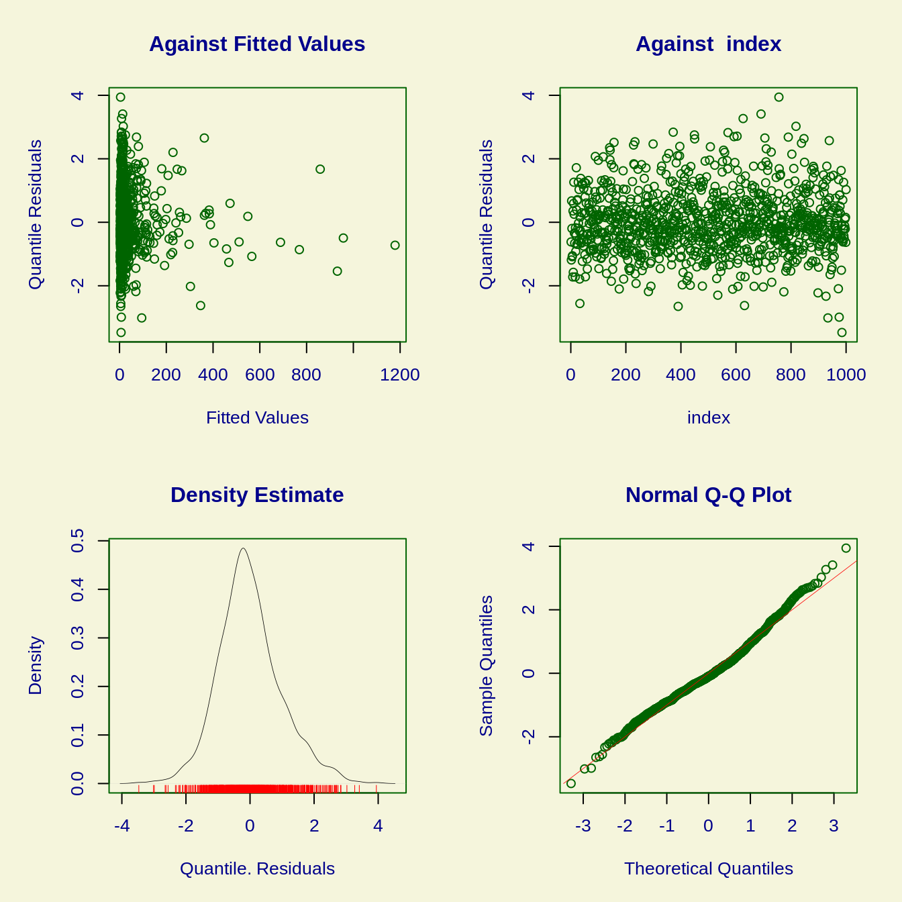
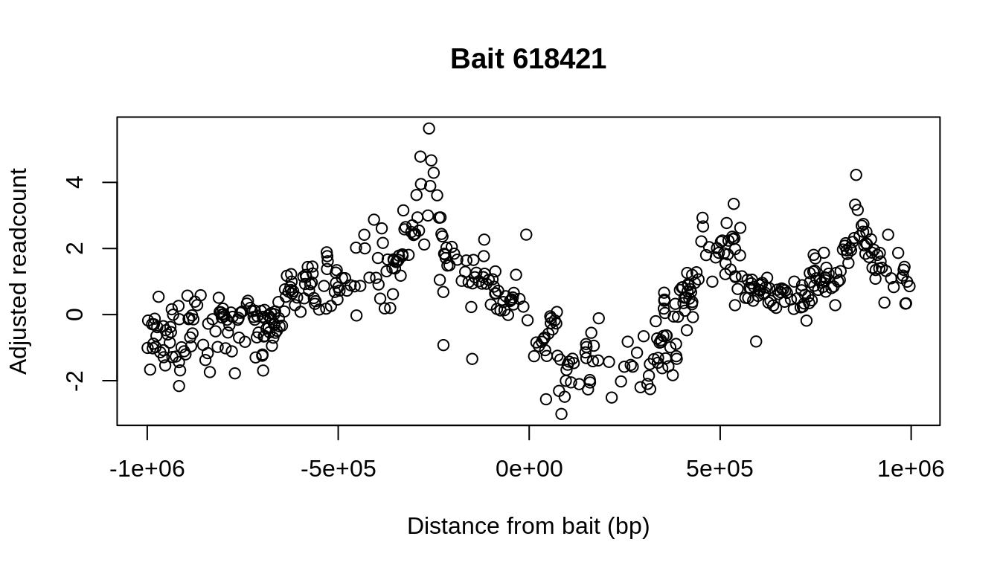
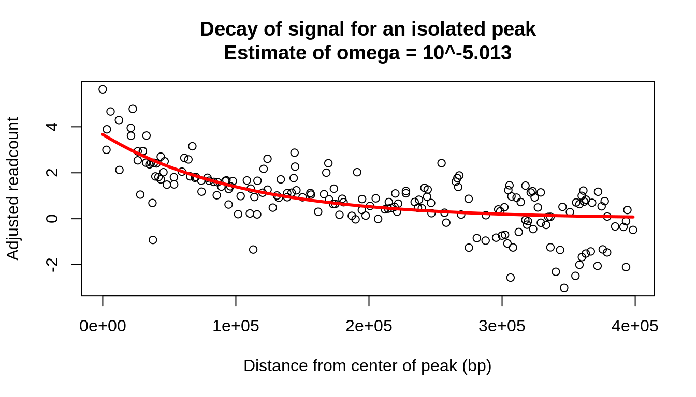
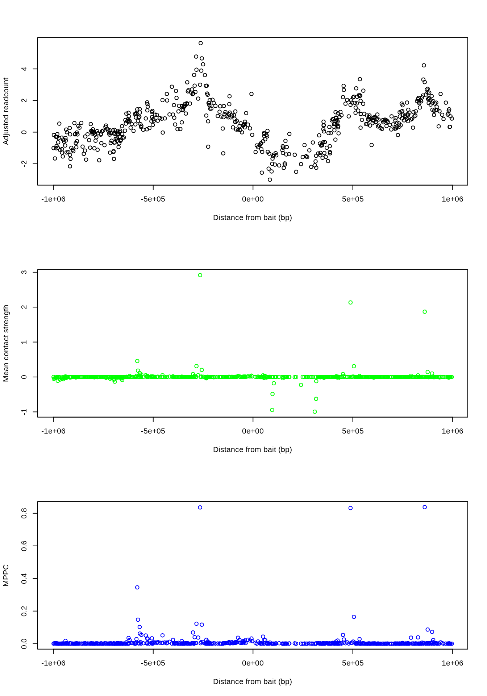

introduction.RmdPeaky maps physical contacts between different regions of DNA by recognizing peaks in a Capture Hi-C (CHi-C) signal for a specific region of interest. It accounts for technical and biological noise, and subsequently finds regions around which the residual signal peaks and then decays with distance. The algorithm finds sets of regions at which peaks of varying strengths combinedly explain the normalized CHi-C signal. The probability of these regions contacting a region of interest is then quantified.
Peaky requires two input files. The first contains the raw CHi-C signal: readcounts (N, must be >=1) corroborating interactions between regions of interest (baits) and their putative interaction partners (preys). The second describes the physical location of each region (fragment) in the genome. These will be referred to as the interactions file and the fragments file, respectively.
An example of each is included with the package and used for the analysis below:
library(peaky) base = system.file("extdata",package="peaky") interactions_file = paste0(base,"/counts.tsv") fragments_file = paste0(base,"/fragments.bed") interactions = data.table::fread(interactions_file) fragments = data.table::fread(fragments_file) print(head(interactions))
## baitID preyID N
## 1: 53559 52096 1
## 2: 53559 52107 1
## 3: 53559 52112 1
## 4: 53559 52113 1
## 5: 53559 52121 1
## 6: 53559 52125 1## chrom chromStart chromEnd ID
## 1: 1 566754 573939 142
## 2: 1 753009 760251 196
## 3: 1 760252 761173 197
## 4: 1 848169 850618 219
## 5: 1 874082 876091 221
## 6: 1 1040209 1043143 236Peaky will initially adjust the readcounts for each pair of fragments based on the linear genomic distance between them, their lengths, and transchromosomal bait activity. The effects these characteristics have on the readcounts can vary between short and long-range interactions, and they are therefore estimated multiple times from samples of interactions spanning various ranges. The first step is thus to bin interactions based on distance using bin_interactions():
BI = bin_interactions(interactions, fragments, bins=5)
## 31-08-2020 17:46:03
## Calculating fragment characteristics...
## 31-08-2020 17:46:03
## Adding fragment characteristics for baits...
## 31-08-2020 17:46:03
## Adding fragment characteristics for preys...
## 31-08-2020 17:46:03
## Calculating interaction distances...
## 31-08-2020 17:46:03
## Calculating total trans-chromosomal read counts for each bait...
## 31-08-2020 17:46:03
## Modelling those as a function of bait chromosome...
## GAMLSS-RS iteration 1: Global Deviance = 363.9654
## GAMLSS-RS iteration 2: Global Deviance = 363.9654
## 31-08-2020 17:46:03
## Adding trans-chromosomal interactivity covariate for preys that were also baited (0 for preys not baited)...
## 31-08-2020 17:46:03
## Excluding 2 interactions that are too proximal (distance < 2500 bp)...
## 31-08-2020 17:46:03
## Excluding 0 interactions that are too distal (distance > Inf bp)...
## 31-08-2020 17:46:03
## Assigning 5 distance bins...
## 31-08-2020 17:46:03
## Done.print(BI$bins)
## dist.bin dist.abs.min dist.abs.max interactions
## 1: 1 2907 733944 9064
## 2: 2 734021 1590586 9063
## 3: 3 1590733 2558841 9063
## 4: 4 2559052 3664236 9063
## 5: 5 3664323 4999963 9064
## 6: <NA> NA NA 32737The 5 distance bins created above all contain an equal number of interactions. Note that the linear genomic distance between two fragments is not defined when they are from two different chromosomes. Transchromosomal interactions (bottom row of the table) are therefore not assigned a distance bin.
Models that predict readscounts under the null (i.e. in the case where an interaction is not biologically significant) can then be generated for each distance bin based on a random sample of the interactions they contain using model_bin():.
models = by(BI$interactions, BI$interactions$dist.bin, model_bin, subsample_size=1000)
## A truncated family of distributions from NBI has been generated
## and saved under the names:
## dNBI.0tr pNBI.0tr qNBI.0tr rNBI.0tr NBI.0tr
## The type of truncation is left
## and the truncation parameter is 0
## 31-08-2020 17:46:03
## Subsampling 1000/9064 interactions for the null model regression...
## 31-08-2020 17:46:03
## Fitting with a maximum of 200 iterations...
## Using formula:
## N ~ log(abs(dist)) + b.trans_res + p.trans_res + sqrt(b.length) + sqrt(p.length)
## GAMLSS-RS iteration 1: Global Deviance = 7819.231
## GAMLSS-RS iteration 2: Global Deviance = 7682.029
## GAMLSS-RS iteration 3: Global Deviance = 7617.062
## GAMLSS-RS iteration 4: Global Deviance = 7601.235
## GAMLSS-RS iteration 5: Global Deviance = 7599.892
## GAMLSS-RS iteration 6: Global Deviance = 7599.832
## 31-08-2020 17:46:04
## Converged: YES
## Iterations: 6
##
## Coefficients:
## (Intercept) 16.3536452789791
## log(abs(dist)) -1.07984803215965
## b.trans_res 0.176930021316788
## p.trans_res NA
## sqrt(b.length) -0.00507636060750867
## sqrt(p.length) 0.00246852651840991
## 31-08-2020 17:46:04
## Obtaining normalized randomized quantile residuals for the full dataset...
## A truncated family of distributions from NBI has been generated
## and saved under the names:
## dNBI.0tr pNBI.0tr qNBI.0tr rNBI.0tr NBI.0tr
## The type of truncation is left
## and the truncation parameter is 0
## 31-08-2020 17:46:04
## Subsampling 1000/9063 interactions for the null model regression...
## 31-08-2020 17:46:04
## Fitting with a maximum of 200 iterations...
## Using formula:
## N ~ log(abs(dist)) + b.trans_res + p.trans_res + sqrt(b.length) + sqrt(p.length)
## GAMLSS-RS iteration 1: Global Deviance = 4184.271
## GAMLSS-RS iteration 2: Global Deviance = 4183.31
## GAMLSS-RS iteration 3: Global Deviance = 4182.718
## GAMLSS-RS iteration 4: Global Deviance = 4182.346
## GAMLSS-RS iteration 5: Global Deviance = 4182.073
## GAMLSS-RS iteration 6: Global Deviance = 4181.893
## GAMLSS-RS iteration 7: Global Deviance = 4181.76
## GAMLSS-RS iteration 8: Global Deviance = 4181.659
## GAMLSS-RS iteration 9: Global Deviance = 4181.583
## 31-08-2020 17:46:04
## Converged: YES
## Iterations: 9
##
## Coefficients:
## (Intercept) 33.3015786827959
## log(abs(dist)) -2.31547069941862
## b.trans_res 0.533726407051653
## p.trans_res NA
## sqrt(b.length) -0.00336988229979575
## sqrt(p.length) -0.00557528934798951
## 31-08-2020 17:46:04
## Obtaining normalized randomized quantile residuals for the full dataset...
## A truncated family of distributions from NBI has been generated
## and saved under the names:
## dNBI.0tr pNBI.0tr qNBI.0tr rNBI.0tr NBI.0tr
## The type of truncation is left
## and the truncation parameter is 0
## 31-08-2020 17:46:04
## Subsampling 1000/9063 interactions for the null model regression...
## 31-08-2020 17:46:04
## Fitting with a maximum of 200 iterations...
## Using formula:
## N ~ log(abs(dist)) + b.trans_res + p.trans_res + sqrt(b.length) + sqrt(p.length)
## GAMLSS-RS iteration 1: Global Deviance = 2920.778
## GAMLSS-RS iteration 2: Global Deviance = 2904.93
## GAMLSS-RS iteration 3: Global Deviance = 2899.755
## GAMLSS-RS iteration 4: Global Deviance = 2897.391
## GAMLSS-RS iteration 5: Global Deviance = 2896.14
## GAMLSS-RS iteration 6: Global Deviance = 2895.391
## GAMLSS-RS iteration 7: Global Deviance = 2894.922
## GAMLSS-RS iteration 8: Global Deviance = 2894.615
## GAMLSS-RS iteration 9: Global Deviance = 2894.401
## GAMLSS-RS iteration 10: Global Deviance = 2894.25
## GAMLSS-RS iteration 11: Global Deviance = 2894.144
## GAMLSS-RS iteration 12: Global Deviance = 2894.065
## 31-08-2020 17:46:04
## Converged: YES
## Iterations: 12
##
## Coefficients:
## (Intercept) 33.782011765923
## log(abs(dist)) -2.30021845345867
## b.trans_res 0.394740351809247
## p.trans_res NA
## sqrt(b.length) -0.00723684538012568
## sqrt(p.length) -0.00136740936364696
## 31-08-2020 17:46:04
## Obtaining normalized randomized quantile residuals for the full dataset...
## A truncated family of distributions from NBI has been generated
## and saved under the names:
## dNBI.0tr pNBI.0tr qNBI.0tr rNBI.0tr NBI.0tr
## The type of truncation is left
## and the truncation parameter is 0
## 31-08-2020 17:46:04
## Subsampling 1000/9063 interactions for the null model regression...
## 31-08-2020 17:46:04
## Fitting with a maximum of 200 iterations...
## Using formula:
## N ~ log(abs(dist)) + b.trans_res + p.trans_res + sqrt(b.length) + sqrt(p.length)
## GAMLSS-RS iteration 1: Global Deviance = 2160.945
## GAMLSS-RS iteration 2: Global Deviance = 2148.52
## GAMLSS-RS iteration 3: Global Deviance = 2144.311
## GAMLSS-RS iteration 4: Global Deviance = 2142.395
## GAMLSS-RS iteration 5: Global Deviance = 2141.369
## GAMLSS-RS iteration 6: Global Deviance = 2140.774
## GAMLSS-RS iteration 7: Global Deviance = 2140.403
## GAMLSS-RS iteration 8: Global Deviance = 2140.164
## GAMLSS-RS iteration 9: Global Deviance = 2140.002
## GAMLSS-RS iteration 10: Global Deviance = 2139.893
## GAMLSS-RS iteration 11: Global Deviance = 2139.816
## 31-08-2020 17:46:05
## Converged: YES
## Iterations: 11
##
## Coefficients:
## (Intercept) 25.9694147524852
## log(abs(dist)) -1.73150502471814
## b.trans_res 0.449221400670234
## p.trans_res NA
## sqrt(b.length) -0.00490695196403016
## sqrt(p.length) -0.00602061166744378
## 31-08-2020 17:46:05
## Obtaining normalized randomized quantile residuals for the full dataset...
## A truncated family of distributions from NBI has been generated
## and saved under the names:
## dNBI.0tr pNBI.0tr qNBI.0tr rNBI.0tr NBI.0tr
## The type of truncation is left
## and the truncation parameter is 0
## 31-08-2020 17:46:05
## Subsampling 1000/9064 interactions for the null model regression...
## 31-08-2020 17:46:05
## Fitting with a maximum of 200 iterations...
## Using formula:
## N ~ log(abs(dist)) + b.trans_res + p.trans_res + sqrt(b.length) + sqrt(p.length)
## GAMLSS-RS iteration 1: Global Deviance = 1570.279
## GAMLSS-RS iteration 2: Global Deviance = 1561.284
## GAMLSS-RS iteration 3: Global Deviance = 1557.102
## GAMLSS-RS iteration 4: Global Deviance = 1554.65
## GAMLSS-RS iteration 5: Global Deviance = 1553.038
## GAMLSS-RS iteration 6: Global Deviance = 1551.89
## GAMLSS-RS iteration 7: Global Deviance = 1551.041
## GAMLSS-RS iteration 8: Global Deviance = 1550.384
## GAMLSS-RS iteration 9: Global Deviance = 1549.867
## GAMLSS-RS iteration 10: Global Deviance = 1549.446
## GAMLSS-RS iteration 11: Global Deviance = 1549.098
## GAMLSS-RS iteration 12: Global Deviance = 1548.804
## GAMLSS-RS iteration 13: Global Deviance = 1548.555
## GAMLSS-RS iteration 14: Global Deviance = 1548.344
## GAMLSS-RS iteration 15: Global Deviance = 1548.16
## GAMLSS-RS iteration 16: Global Deviance = 1548.008
## GAMLSS-RS iteration 17: Global Deviance = 1547.874
## GAMLSS-RS iteration 18: Global Deviance = 1547.755
## GAMLSS-RS iteration 19: Global Deviance = 1547.65
## GAMLSS-RS iteration 20: Global Deviance = 1547.557
## 31-08-2020 17:46:06
## Converged: YES
## Iterations: 20
##
## Coefficients:
## (Intercept) 65.7212776868882
## log(abs(dist)) -4.35518100957048
## b.trans_res 0.204486548712668
## p.trans_res NA
## sqrt(b.length) -0.0035000713785154
## sqrt(p.length) -0.00379777515204353
## 31-08-2020 17:46:06
## Obtaining normalized randomized quantile residuals for the full dataset...plot(models[[1]]$fit)

## ******************************************************************
## Summary of the Randomised Quantile Residuals
## mean = -0.005840354
## variance = 0.9692239
## coef. of skewness = 0.4036969
## coef. of kurtosis = 3.731102
## Filliben correlation coefficient = 0.9925864
## ******************************************************************Taking the observed readcounts and adjusting for the effects of biological and technical noise in the models gives us normalized readcounts: they quantify the extent to which the observed readcounts exceed those predicted under the null. In practice, the normalized readcounts are the randomized quantile residuals of each model. Note that the Q-Q plot shows a series of outliers: unexpectedly high adjusted read counts.
The adjusted readcounts for all putative interaction are extracted from the models below. They are tacked onto the interactions, which are all grouped together again using split_baits(). Note that the p-values calculated here mark the significance of the observed readcounts before local patterns across fragments are considered (such patterns will be considered later, using peaky()).
residuals = lapply(models, "[[", "residuals") bins = split(BI$interactions, BI$interactions$dist.bin) BTS = split_baits(bins, residuals)
## 31-08-2020 17:46:07
## Calculating p-values and performing bin-wise FDR-adjustments...Plotting the adjusted readcounts associated with a single bait (up to 1Mb around it) reveals that there is still an autocorrelated signal:
relevant_bait = BTS[baitID==618421] zoom = relevant_bait[abs(relevant_bait$dist)<1e6] plot(x=zoom$dist, y=zoom$residual, xlab="Distance from bait (bp)", ylab="Adjusted readcount", main=paste("Bait",unique(zoom$baitID)))
 A central assumption of Peaky is that this signal stems from few direct contacts, regions above which the CHi-C signal peaks. The signal then decays amongst neighboring fragments, with which contacts are merely collateral.
##Joint analysis of neighboring fragments Next, Peaky identifies sets of direct contacts that explain the peaks in the adjusted readcounts. It takes a single bait and proposes direct contacts with several of its prey fragments simultaneously, at varying strengths.
To determine where direct contacts occur, Peaky must be told what a peak in the adjusted readcounts looks like: how quickly would the signal decay as we consider fragments further and further away from a fragment that is directly contacted? The steepness of the expected decay is set via the parameter \(\omega\):
\[\begin{equation} y = \beta \exp{(-|\omega * d|)} \end{equation}\]
where \(y\) is the contribution of a specific peak (direct contact) to the adjusted readcount we observe, \(\beta\) represents peak height and \(d\) the distance from the center of the peak in bp.
We can look at several isolated peaks to see what would be an appropriate choice of \(\omega\). For example, from the decay seen around the highest peak of the bait above, we can estimate that \(\omega \approx 10^{-5}\):
#Isolate the highest peak and adjusted readcounts within 40 kbp peak_center = zoom$dist[which.max(zoom$residual)] zoom$distance_from_peak = abs(zoom$dist-peak_center) single_peak = zoom[distance_from_peak<4e5,] #Define the distance function and find the best fit for omega dist_exp = function(offset, strength, omega_power){ omega = 10^omega_power strength * exp(-(abs(offset * omega))) } fit_omega = nls(residual~dist_exp(distance_from_peak,strength,omega_power), data=single_peak, start=list(strength=5, omega_power=-3)) { plot(single_peak$distance_from_peak, single_peak$residual, main=paste0("Decay of signal for an isolated peak\nEstimate of omega = 10^", round(coefficients(fit_omega)["omega_power"],3)), xlab="Distance from center of peak (bp)", ylab="Adjusted readcount") lines(single_peak$distance_from_peak, fitted.values(fit_omega), col="red", lwd=3) }

At this point, Peaky is ready to determine where peaks, or direct contacts, occur in the signal for the bait above. It does so iteratively, by proposing different sets (i.e. different models) of hypothetical peaks, and settling more often on more likely sets (through reversible-jump Markov chain Monte Carlo estimation). The number of sets proposed is controlled by the iterations parameter of peaky(). It is recommended to increase the value until the results (e.g. MPPC, see below) are highly correlated between different runs of peaky() (note that its output is not deterministic). Raw models and their likelihoods are stored in PKS, but these do not have to be inspected manually (although this is possible, e.g. to remove burn-in models or to construct trace plots). Instead, summary statistics can be calculated with interpret_peaky(). For each fragment X, these are stored in the following columns:
relevant_bait = BTS[baitID==618421] omega_power = -5 PKS = peaky(relevant_bait, omega_power, iterations=1e6)
## 31-08-2020 17:46:07
## Constructing distance matrix with omega=10^-5...
## 1e+06 iterations will be run...
## Setting user specified argument AlphaPriorMu
## Setting user specified argument AlphaPriorSd
## Setting user specified argument Alpha_Initial_Value
## Setting user specified argument GaussianResidual_Initial_Value
## Setting user specified argument GaussianResidualPrior_UnifArg1
## Setting user specified argument GaussianResidualPrior_UnifArg2
## Setting user specified argument GaussianResidualPriorFamily
## Setting user specified argument Add_Move_Probability
## Setting user specified argument Delete_Move_Probability
## Setting user specified argument Swap_Move_Probability
## 0 observations deleted due to missingnessWriting data into an input file for BGLiMS...
## Data written in 0 hrs 0 mins and 48 seconds.
## Calling BGLiMS Java algorithm with command:
## java -jar "/home/cq/R/x86_64-pc-linux-gnu-library/3.6/R2BGLiMS/BGLiMS/BGLiMS.jar" "/tmp/RtmpnnnBwV/file73384cebda67_Aug31174608_Arguments.txt" "/tmp/RtmpnnnBwV/file7338516d6e39_Aug31174608_Data.txt" "/tmp/RtmpnnnBwV/file73386d8c38c3_Aug31174608_Results.txt" 1000000 0 100 100000 509259 1 1 0 -1 1 1 1 1707
## BGLiMS Java computation finished in 0 hrs 4 mins and 57 seconds.
## Reading BGLiMS posterior output...
## Posterior output processed in 0 hrs 0 mins and 10 seconds.
## Finished.P = interpret_peaky(relevant_bait, PKS, omega_power)
## 31-08-2020 17:52:04
## Calculating alphas...
## 31-08-2020 17:52:04
## Calculating posteriors...
## 31-08-2020 17:52:07
## Calculating betas means and medians...
## 31-08-2020 17:52:08
## Constructing distance matrix with omega=10^-5...
## Finding RJMCMC predictions based on mean betas...
## 31-08-2020 17:52:09
## Wrapping up...par(mfrow=c(3,1)) zoom = P[abs(P$dist)<1e6] plot(x=zoom$dist, xlab="Distance from bait (bp)", y=zoom$residual, ylab="Adjusted readcount") plot(x=zoom$dist, xlab="Distance from bait (bp)", y=zoom$beta_mean, ylab="Mean contact strength", col="green") plot(x=zoom$dist, xlab="Distance from bait (bp)", y=zoom$rjmcmc_pos, ylab="MPPC", col="blue")
 While many fragments originally had high (adjusted) readcounts, the peaks in the CHi-C signal can be explained by only 3-4 direct contacts, and MPPC values jump up where these occur.
##Filesystem version
To make the software more convenient for use on a cluster, Peaky has wrapper functions that interact directly with the filesystem. These wrappers generally take integer arguments specifying which inputs (out of some directory) to work with, and save results directly to disk.
The workflow is similar to (and arguably simpler than) that of the interactive version, and allows for parallelization at the following computationally intensive steps:
model_bin_fs
peaky_fs()
These two functions are demonstrated within for-loops in the example below, but would normally be run in parallel (e.g. via a scheduler).
base = system.file("extdata",package="peaky") interactions_file = paste0(base,"/counts.tsv") bins_dir = paste0(base,"/bins") fragments_file = paste0(base,"/fragments.bed") bin_interactions_fs(interactions_file, fragments_file, output_dir=bins_dir) fits_dir = paste0(base,"/fits") for(bin_index in 1:5){ model_bin_fs(bins_dir,bin_index,output_dir=fits_dir,subsample_size=1000) } baits_dir = paste0(base,"/baits") split_baits_fs(bins_dir,residuals_dir = fits_dir, indices=1:5, output_dir = baits_dir) baitlist = paste0(baits_dir,"/baitlist.txt") rjmcmc_dir = paste0(base,"/rjmcmc") omega_power = -5 for(i in 1:1){ peaky_fs(baitlist,i,output_dir=rjmcmc_dir,omega_power=omega_power) } rjmcmc_list(rjmcmc_dir) rjmcmclist = paste0(rjmcmc_dir,"/rjmcmclist.txt") baits_rjmcmc_dir = paste0(base,"/baits_rjmcmc") interpret_peaky_fs(rjmcmclist,1,baits_dir,baits_rjmcmc_dir,omega_power)
After running the code above, results should be neatly saved in the package’s directory.